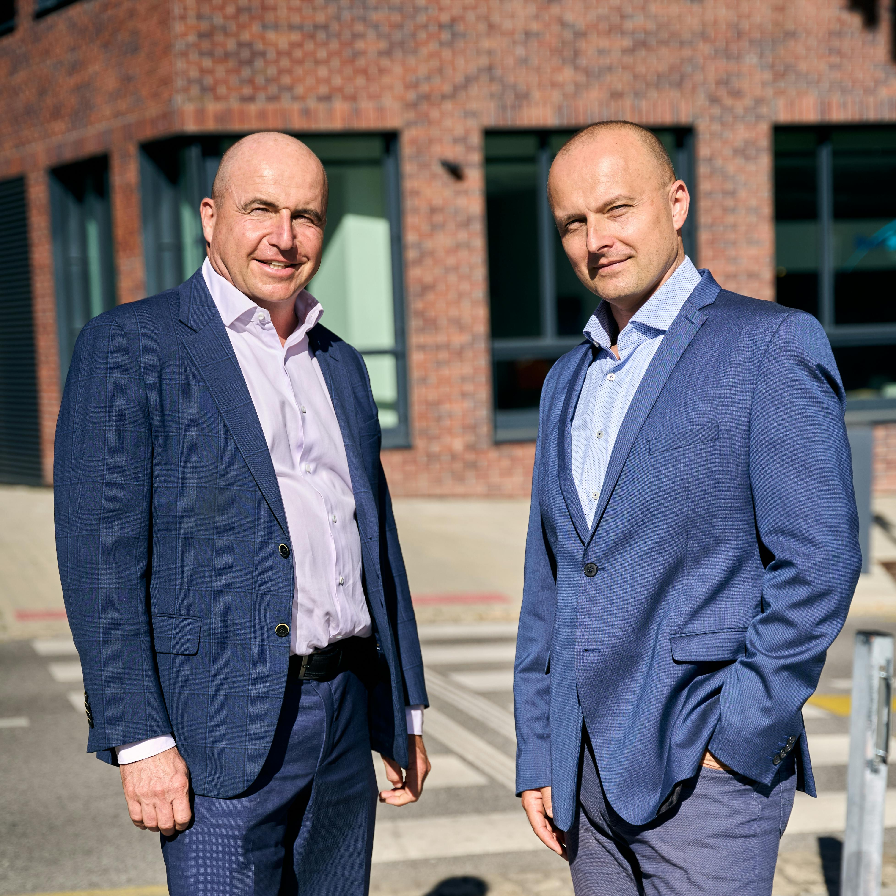

How to simplify a small-business offer without losing value.
Use constraints, outcomes, and delivery boundaries to make your services easier to understand and easier to buy.
Read articleArticles cover positioning, client experience, digital product strategy, delivery operations, and the habits that help teams implement with more consistency.
Northline writes about the places where growth usually starts to feel heavier: unclear offers, messy delivery, weak client follow-through, and support systems that are still too manual.
Simplify what you sell before you add more complexity.
Improve onboarding, communication, and milestone visibility.
Use courses, worksheets, and portal support to keep work moving.

Use constraints, outcomes, and delivery boundaries to make your services easier to understand and easier to buy.
Read article
Digital programs work best when they carry implementation between calls, not when they imitate one-to-one strategy.
Read articleThe fastest trust-builder is a clear next step. Here is how to build that into onboarding and every milestone after it.
Read article
A simple review cadence can reduce missed tasks, unclear ownership, and reactive communication.
Read articleStart with visibility, then simplify what you sell, then improve how clients experience delivery.
Read articleDashboards, worksheets, and digital prompts make advice far easier to implement in the real world.
Read articleThe library is organized around the decisions that make offers easier to sell, delivery easier to run, and client momentum easier to sustain.
Packaging, positioning, and sales language that reduce confusion before a client says yes.
Onboarding, communication, and milestone design that help clients feel progress sooner.
Weekly operating habits, ownership, and workflows that make implementation steadier.
Courses, worksheets, and portal resources that keep work moving between live sessions.
You do not need to read everything. Start with the bottleneck that is creating the most drag, then follow the linked case studies, services, or programs that support action.
Choose the topic that is costing the most time, margin, or client confidence right now.
Use the articles to get clearer on boundaries, priorities, and what should change first.
Move into the case studies to see how the same problems were solved in practice.
Use services, programs, or worksheets to carry the idea into implementation.